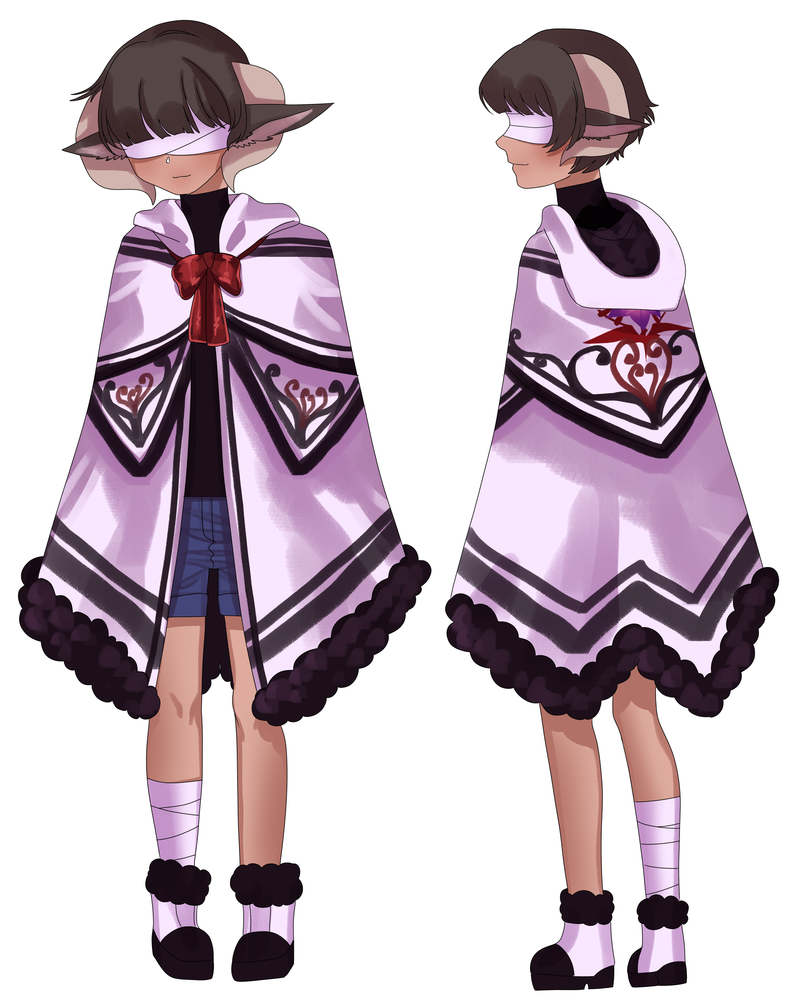

"I don't think anyone is born a monster..."
Subject Photograph

Field Warning
Do not engage when the Viper and the Doctor are present.
Identity
Alias: The Sheep
Age: 19
Height: 5'0"
Weight: 100 pounds
Status: Unknown
Role: Support/Healer
Affiliation: The Viper Pit
Insignia

Psychological Assessment
Quite pleasant, he is a soft spoken and gentle soul who loves to help out where he can. He helps anyone he can help without question, without considering whether the person he’s assisting is good or bad. It makes him quite easy to manipulate.
He is generally calm, and likes to partake in quiet activities like listening to soft music, sitting out in nature, talking to and feeding wildlife, etc. he also likes to hang in places like parks, listening to people go by as he enjoys a sweet drink or two.
Though he enjoys the company of others, he does not like crowded, noisy places like bars or cafeterias, as they get very quickly overwhelming for his sensitive ears. When overwhelmed, he hides away alone to try and calm his senses.
He is blissfully unaware, seeing the best in people whether they deserve it or not- he has the tendency to misinterpret intent to fit his endlessly positive world view. He is naive and confused, unable to see the evil that surrounds him.
"Are you hurt? Can I help you?"
Likes
Sweets..
Helping out..
Animals (especially small animals)..
Company..
Dislikes
Being unable to help when needed..
Feeling helpless. .
Good Habits
Bad Habits
Secrets
Fears
"This is where I belong."